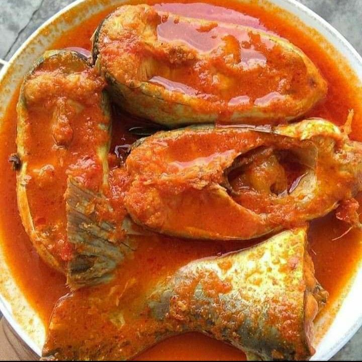
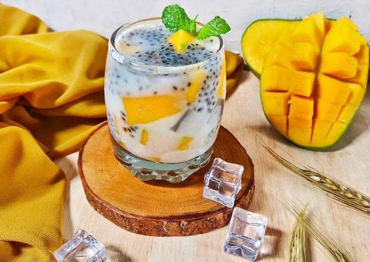
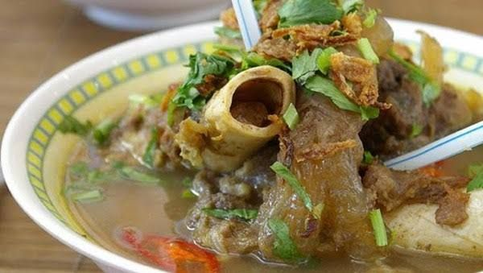
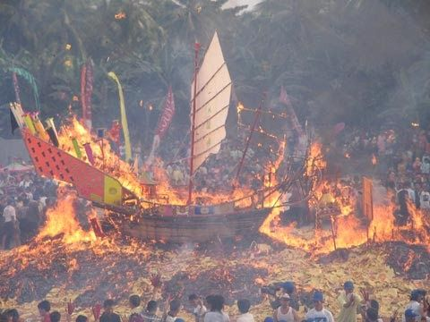
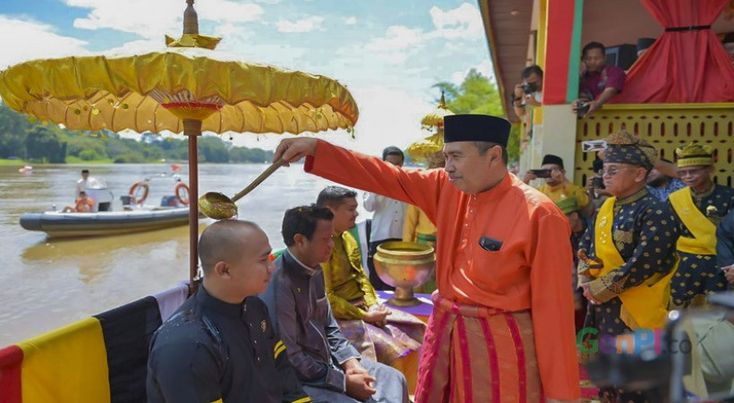
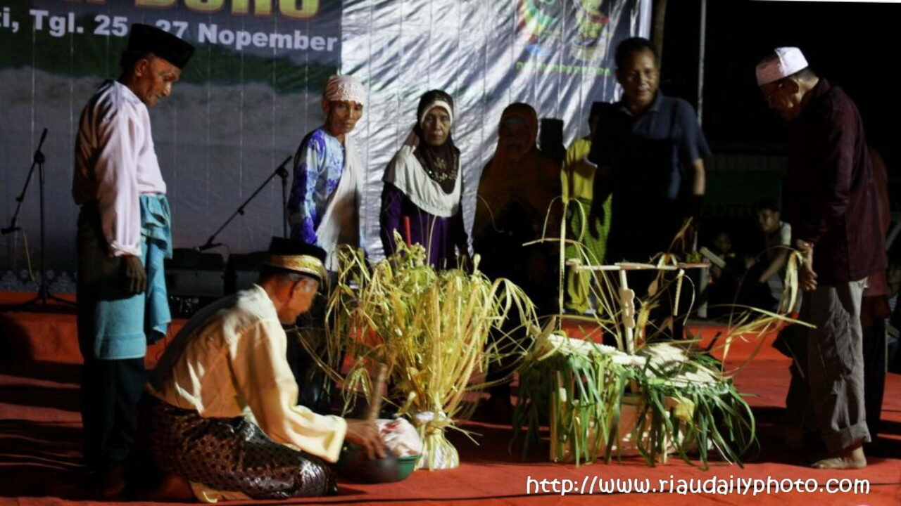
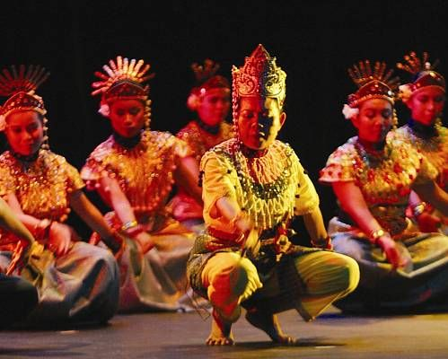
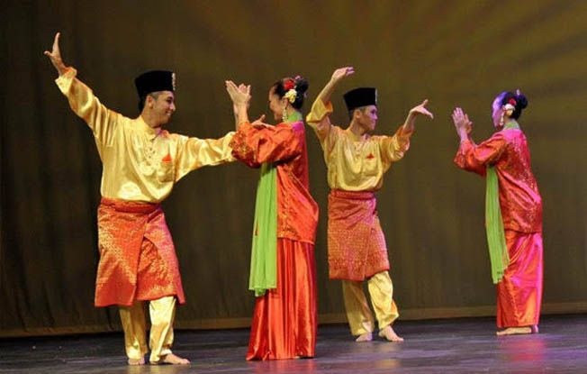
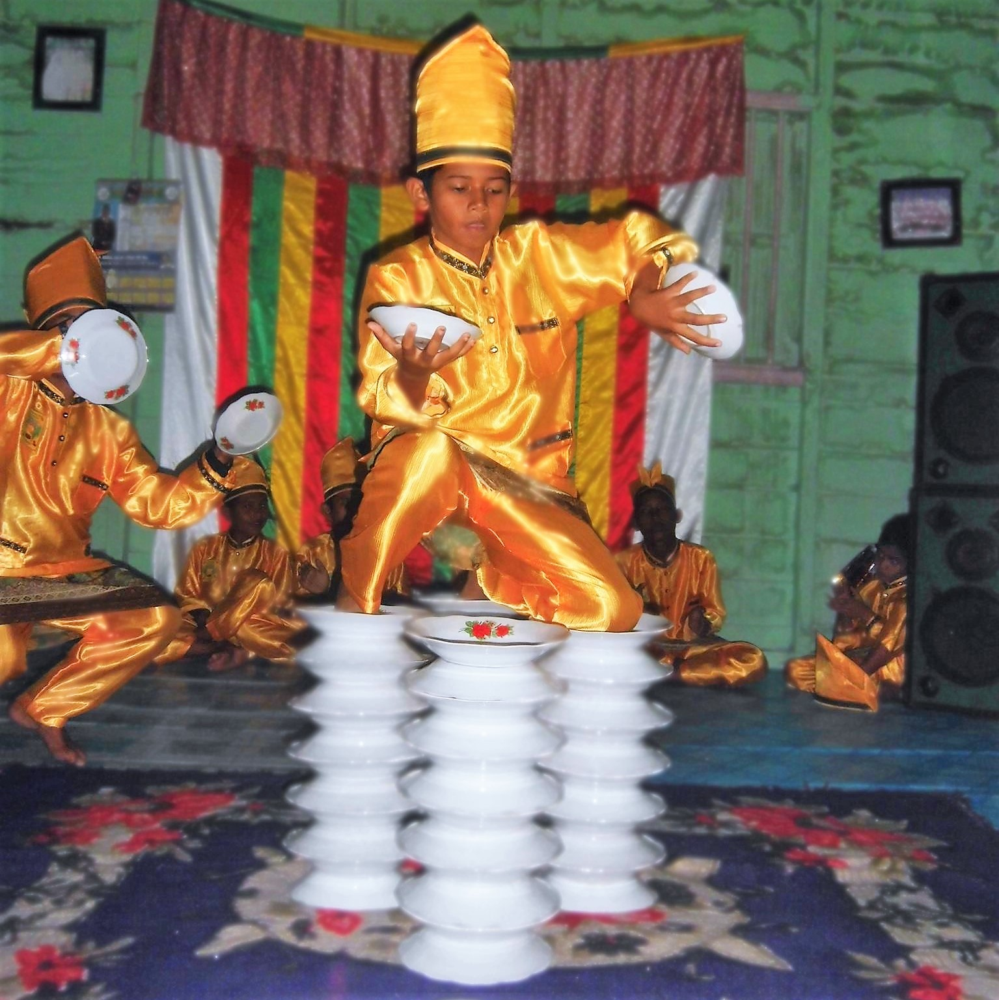
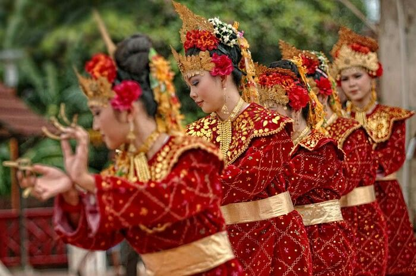

Culture
Experience Our Heritage

MUARA TAKUS

PEDANG JENAWI

MASJID AGUNG SULTAN RIAU

ISTANA SIAK

BUKIT KURSI CASTLE

BOLU KEMOJO

IKAN PATIN ASAM PADEH

MIE LENDIR

ES LAKSAMANA MENGAMUK

MIE SAGU

SOP TUNJANG

PACU JALUR

BAKAR TONGKANG

BALIMAU KASAI

BELIAN

MAKNYONG

ZAPIN DANCE

INAI PINGGAN DUA BELAS DANCE
